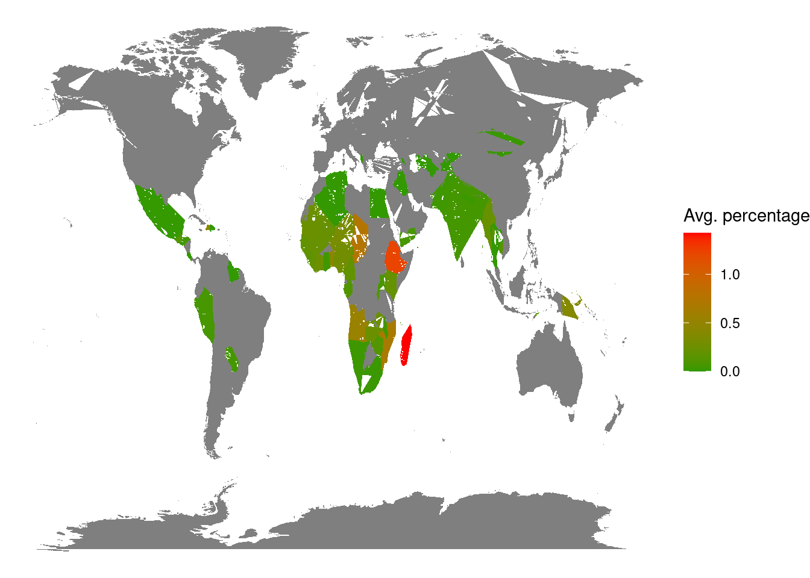
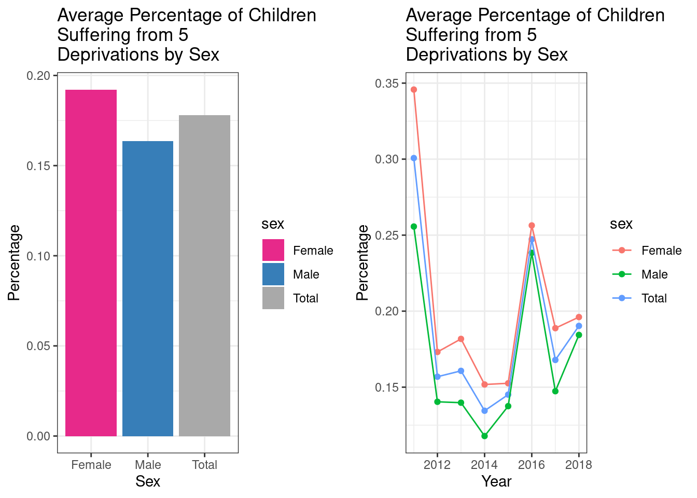
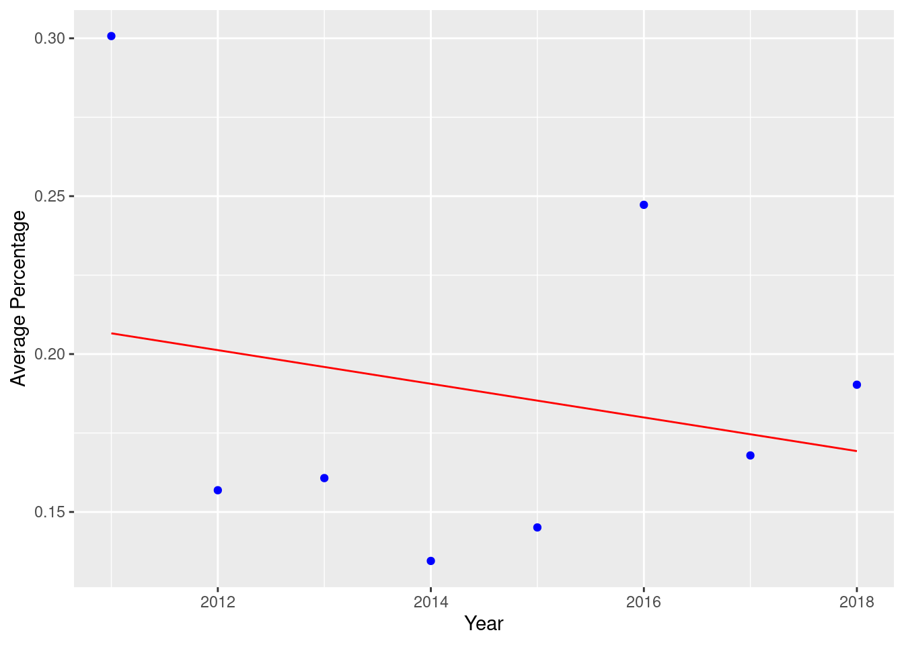

Quarto Report Final Assignment MT5000
Dashboard about children suffering from exactly 5 deprivations.
Made by Loïc BESSON

In order to understand what we are talking about, we need to go back to UNICEF’s explanation of its data and its meaning:
Children suffer poverty differently from adults. Their needs, in order to survive and thrive are different, their dreams and hopes are different, and their necessities ought to be supported and taken care of by adults, not by themselves. Children are not supposed to earn a living for themselves. Thus, when measuring child poverty, it is important to use a direct multidimensional measurement. Each dimension is a right constitutive of poverty (i.e. clothing, education, health, housing, information, nutrition, play, sanitation, and water). Also, the measurement of child poverty is based on the individual experience of poverty by children (not just a disaggregation of household poverty which would hide and/or distort the situation and evolution of child poverty). Due to data limitations, only the following dimensions were estimated: education, health, housing, nutrition, sanitation, and water. While countries may estimate child poverty using different indicators (circumscribed to constitutive rights, i.e. not including lack of love, neglect, or other problems or rights violations), the estimates presented here are done using the same dimensions, the same indicators, and the same thresholds across countries (for global comparison). Thus, they are based on homogenous (i.e. internationally comparable) standards and they will likely differ from national multidimensional child poverty estimates (if available). Moreover, this indicator measures (using homogenous standards and moderate thresholds) how many children suffer at least five deprivations.
Distribution of the average percentage of children suffering from exactly 5 deprivations by country

This map of the world allows us to visualize the countries in which there are the most children suffering from exactly 5 deprivations. We can see that the continent most prone to this is Africa, with the countries with the highest percentage.
Central and East Africa are the most affected regions in the world, including Madagascar, the country with the highest rate (1.426%), but also other highly affected countries such as Ethiopia, DRC and Chad.
In the rest of the world, Asian or Oceanic countries such as Burma, Laos or Papua New Guinea are the most affected.

Average Percentage of Children Suffering from Exactly 5 Deprivations Over the Years

These three graphs also provide a global view of the figures presented by Unicef. The graph on the right represents the world average (by sex) over the years of the percentage of children suffering from exactly 5 deprivations (among the countries concerned, the more developed countries such as France or the United States for example are not included). On the left, it is the average per sex on the same criteria. The last graph shows the regression line from the graph on the right, for the global population (including males and females).
Thus, the graph on the right allows us to see that between 2011 and 2018, the average percentage has been divided by more than 1/3. However, it is very complicated to see any stabilization of the numbers, because although the curve stabilized between 2012 and 2015, the number of children involved unfortunately increased again between 2015 and 2016, and then between 2017 and 2018.
As far as the distribution by sex is concerned, it is quite simple: the distribution is quite balanced, but it can be noted that female persons are more affected than male persons.
The last graph shows us that, g lobally, the number of children affected by this is decreasing over the years, as shown by the regression line.